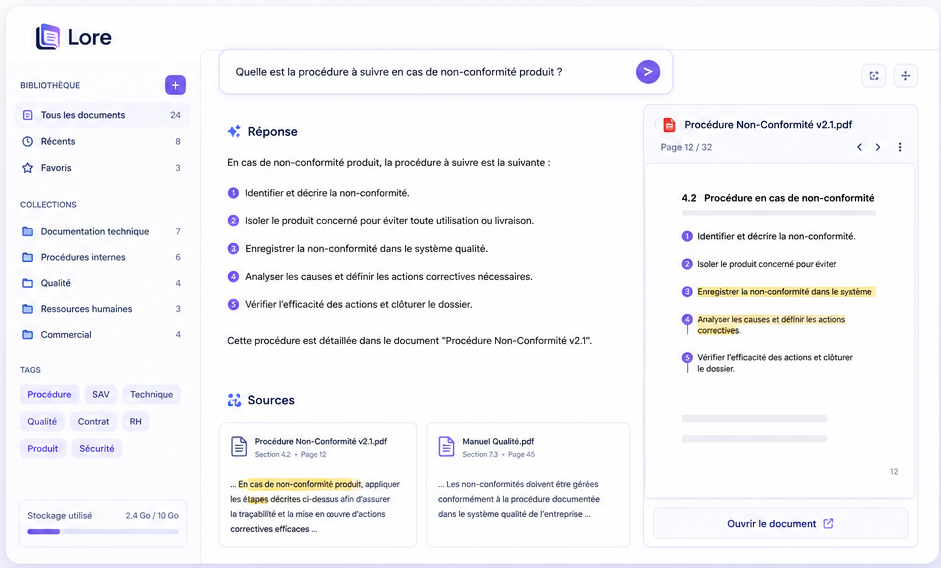

Lore indexe vos documents, comprend vos questions précisément, et vous répond en citant ses sources. Local-first, contrôle total, sans boîte noire.
Tout le monde accumule des années de savoir-faire dans ses documents. Le problème n'est pas le manque d'information — c'est son accès.
Dossiers réseau, e-mails, SharePoint, Google Drive… La connaissance est partout, donc nulle part.
Retrouver une procédure ou une spécification technique prend des minutes, parfois des heures.
« Demande à Marie, elle sait où c'est. » Les équipes dépendent de quelques personnes clés.
Quand un expert part, une partie de la connaissance part avec lui. Sans documentation accessible, tout est à reconstruire.
Résultat : Pertes de temps, des erreurs évitables, des réponses plus lentes qu'elles ne devraient l'être — non par manque de compétence, mais par manque d'accès à l'information.
Lore ne cherche pas des mots-clés — il comprend la structure de vos documents, construit un index logique, et raisonne à partir de vos sources. La hiérarchie documentaire reste intacte pour des réponses de meilleur qualité.
Le moteur détecte, structure et hiérarchise vos documents — Word, PDF, Excel, texte — sans en modifier un seul octet.
Le LLM résume, catégorise, génère des tags et identifie les concepts clés. Les métadonnées sont stockées localement dans SQLite.
Un index structuré — pas un vecteur flottant — fidèle à vos arborescences, avec relations et navigation entre documents.
Chaque réponse cite ses sources : document, section, page, extrait. Vérifiez en un instant dans l'original.
Questions, réponses et sources utilisées conservées localement. Continuez une recherche là où vous l'avez laissée.
L'accès depuis un terminal en local est gratuit — ils s'exécutent sur votre machine avec votre propre clé API (essayer gratuitement ici). La plateforme web est une offre payante qui ajoute l'interface web, le stockage et l'inférence IA hébergée.
La clés API est potentiellement gratuite, vous
renseigner ici.
Intégration dans vos scripts shell, CI/CD,
Makefiles. Sortie structurée, pipe-friendly.
Navigation au clavier, historique de session,
affichage structuré des sources. Construit avec
React/Ink.

Interface web, stockage cloud et inférence IA incluse. Aucune configuration, aucune clé API à gérer.
La même technologie s'adapte à différents contextes métier. Voici les plus courants dans les PME industrielles et de services.
Vos techniciens retrouvent les spécifications, les schémas et les instructions d'intervention en quelques secondes — sans avoir à fouiller des dossiers réseau.
Onboarding, processus RH, achats, comptabilité — vos collaborateurs accèdent aux procédures exactes dont ils ont besoin, sans solliciter leurs collègues.
Vos équipes support répondent plus vite et plus précisément aux clients, sans dépendre des experts techniques pour chaque question complexe.
Vos responsables qualité accèdent instantanément aux exigences normatives, aux non-conformités traitées et aux plans d'action en cours.
Commerciaux et technico-commerciaux retrouvent les caractéristiques, compatibilités et arguments produit en temps réel, même en déplacement.
Préservez et rendez accessible le savoir-faire de vos experts, même après leur départ. La connaissance critique reste dans l'entreprise.
Lore repose sur trois principes non-négociables, qui guident chaque décision d'architecture.
L'assistant ne doit jamais inventer. Chaque affirmation est ancrée dans un extrait documentaire réel, tracé et vérifiable.
Vos données restent chez vous par défaut. L'index, l'historique, le cache — tout est local. Le cloud est un choix, pas une contrainte.
Chaque étape du pipeline est visible : sources sélectionnées, prompts envoyés, coûts d'inférence, temps d'exécution. Aucune boîte noire.
Pas une démo générique. Nous montrons votre assistant, sur vos documents, qui répond à vos questions métier.
Chaque réponse indique le document source exact. Vos équipes vérifient en un clic, sans avoir à faire confiance aveuglément.
Pas de syntaxe à apprendre, pas de mots-clés à deviner. On pose la question comme on la poserait à un collègue.
L'assistant est entraîné sur votre documentation. Les réponses reflètent vos réalités, votre vocabulaire, vos procédures.
Téléchargez Lore pour commencer localement, ou contactez-nous pour une démonstration sur vos documents réels.